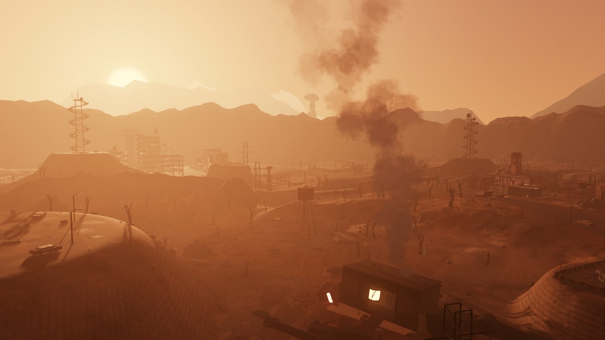
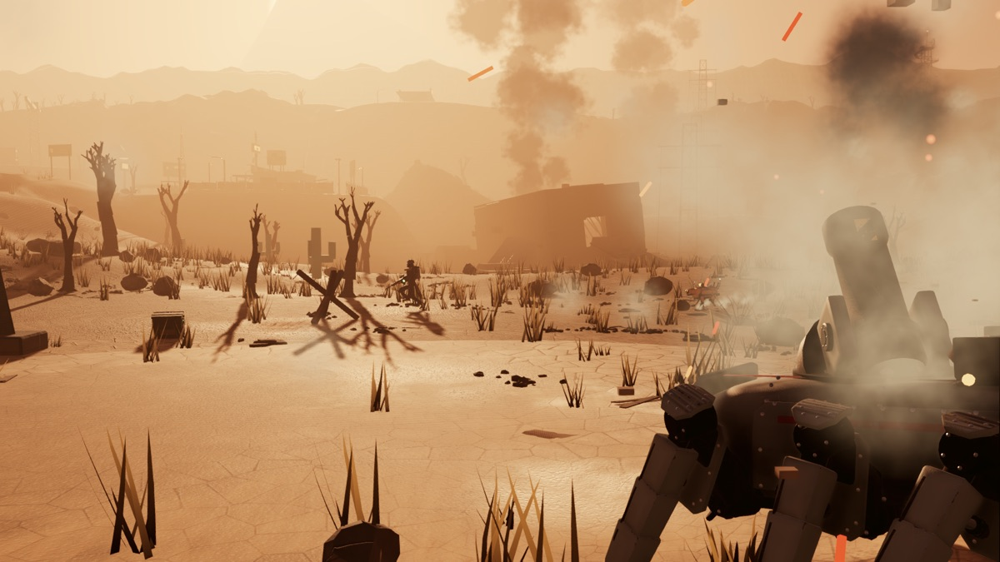
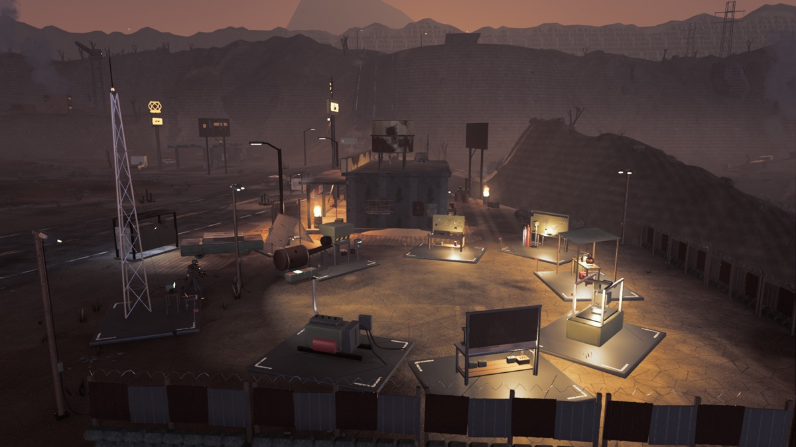
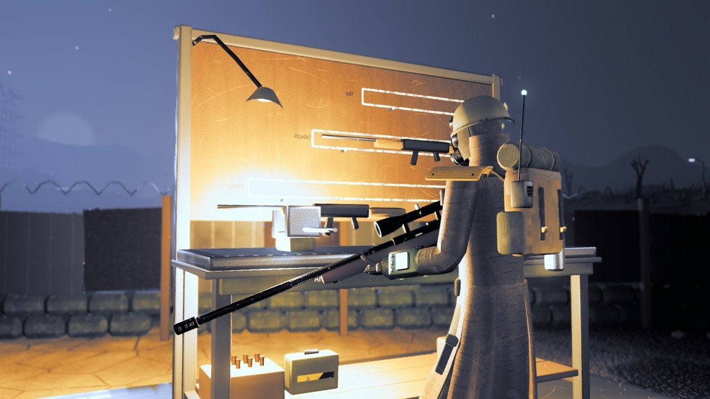
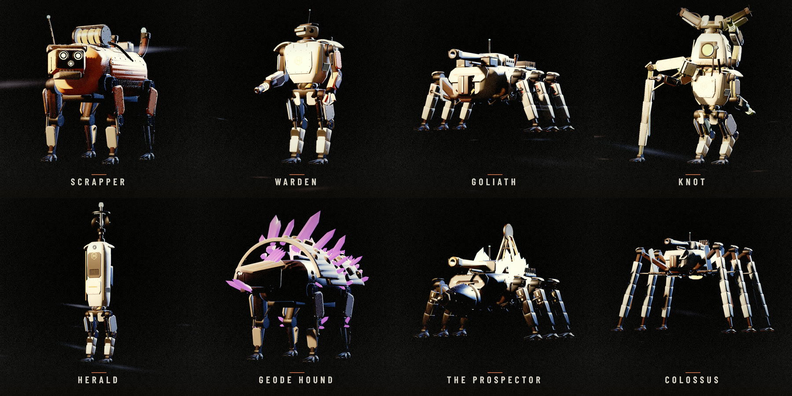

~/game-design / rustfall 01 of 03
Rustfall
LIVEFREE PREVIEWOutfight robot packs, strip a dead basin for parts, and build a home out of its junk. A controller-first open-world shooter – 800 m of wasteland, twenty kinds of machine, a cavern under it all – where every model, texture and robot was generated in code. The first act is a free download for Windows and Mac.





problem
Open-world shooters are the most expensive thing in games: a world worth walking, enemies with real behavior, and an art budget measured in studios. The question was whether one person directing agents could make one that feels like the real thing – with no asset store, no scans and no art team – and whether it holds up on someone else's machine.
built
- Every asset is code. Headless Blender Python generators write every model and texture – robots, guns, the camp, the terrain – and nothing is downloaded or scanned. When my note on the art was "all the lines are too straight," the fix went into one shared wear kit, and every building came back chamfered, sagging and damaged.
- Packs, not mobs. Twenty kinds of robot, and the support units make each other dangerous. Kill the herald first and the pack goes deaf. Leave the bombard standing and shells land where you stood.
- Tuned by breakpoint, not percentage. The Moonlight sniper hit for 190, and a weak point takes ×3 – so one shot killed every 520 HP enemy on its level. A 13% cut to 165 puts that shot at 495. The number barely moved; the one-shot disappeared, and that's what a player feels.
- A world under the world. The Moon Level is a 400 m cavern 130 m down a mine cage, with its own legendary robots and guns, lit by a glowing stone moon. It regenerates from its own spec, and each detail pass runs on its own random stream so a new pass never moves what's already placed.
- Verified on the deploy target. Godot's release template skips null checks, so a crash the editor shrugged off killed the itch build. Now every release runs its checks inside the exported builds under an empty home folder, and each build has to say what it is before it ships. A Legion Go ran it at 13–19 fps; graphics presets, FSR render scaling and an AUTO tuner shipped the same day.
- Instrumented from the first public build. An anonymous beacon reports minutes played, notes found, deaths and frame rate by graphics card to a dashboard, and every new player sends me an email. A story game's question is where people stop, so that's what it measures.
stack
- engine
- Godot 4.5 · Forward+ · Jolt physics
- art
- headless Blender 5.1 Python → glTF · zero downloaded assets
- audio
- 114 effects – 42 recorded, 72 synthesized · four buses
- testing
- 600+ check headless smoke suite · capture harness for fixed views · tester bot diffed every round
- analytics
- anonymous beacon → Supabase · dashboard tab · new-player email
- input
- DualSense first · Xbox · keyboard + mouse
- distribution
- itch.io via butler · Windows + macOS · the first act free
status
Free preview live on itch.io – the first act, Windows and Mac. Two weeks from an overnight build to a public release, then ten releases in six days as the first players and a handheld found what my Mac didn't. The full game – the rest of the basin, the Moon Level, New Game+ – is still in development, built in rounds: each one ends with me playing it and listing what's off, and that list is the next round.